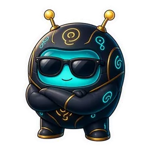

How Lumo works, and every command.
topic?Jump straight to a help page

CommandsSearch or filter below. Click a command to copy it. Premium means the server needs Premium.
18 slash commands. arg? means optional.
Reaction roles and Customize are not slash commands any more: manage them in the web dashboard (beta), together with giveaways and polls.
How Lumo works, and every command.
topic?Jump straight to a help pageJoin or leave your voice channel for live voice with Lumo. Pick join or leave. Talking with Lumo in voice needs Premium. Music works on any server.
actionJoin your voice channel and listen, or leave itLumo latency and connection status.
Play a song, or add it to the queue if something is playing. One song per command. Up to 25 songs can wait per server, and you get Added to queue with its position. The next song starts by itself when one ends. The now-playing message shows what is up next and has Pause/Resume, Skip, Stop (clears the queue) and Queue buttons for anyone in the voice channel, and for admins.
querySong name or a SoundCloud linkShow what is playing and the next songs in the queue. Only you see it. Anyone in the server can look.
Remove one song from the queue by its position. Position 1 is the song that plays next. You need to be in the voice channel, or be an admin.
positionPosition in the queue (1 = next up)Empty the queue. The current song keeps playing. You need to be in the voice channel, or be an admin.
Lumo Coin games: open the game hub, or jump straight into a game. Run it on its own to open the game hub: your balance, a line about each game and a button per game. Press one, type your bet, and play. Games: Blackjack, Slots, Poker, Higher or Lower, Coin Toss, Trivia and Connect Four. Every result shows your new balance, with Same bet, Double and Quit buttons for a minute. Only you can press your buttons. Play money only.
game?Skip the hub and start this gamebet?Bet in Lumo Coins (asked for if you pick a game without one)Spin the Lumo Coin slots. Pick a machine, or use your last one. Pick Cosmos Wheel, Nebula or Event Horizon, or leave machine empty to use your last one. The result card shows the reel grid, multiplier, payout and your balance, with Same bet, Double, Paytable and Quit buttons. Bets 100 to 10,000. Play money only.
bet?Bet in Lumo Coins (asked for if you leave it out)machine?Which cabinet to sit atConnect Four for Lumo Coins: play Lumo, or challenge a member. Leave opponent empty to play Lumo, or challenge a member: you each put in the same bet and the winner takes the pot. Bets 10 to 1,000. Play money only.
opponent?Challenge a member (leave empty to play Lumo)bet?Bet in Lumo Coins (asked for if you leave it out)Your Lumo Coin wallet and the top 10 on this server. Your Lumo Coin wallet is shared across servers. Each server has its own Lumo house wallet (100,000,000 to start), and the leaderboard shows this server’s house.
Claim today's Lumo Coins (once per Eastern day; consecutive days build a streak bonus). Takes no options: just run it. Claim on consecutive days (Eastern time) to build a Day N streak: from day 2 you get +100 more per day, up to +500, and a missed day starts it over.
Show a member's Discord facts and Lumo Coin wallet.
member?Who to look up. Leave empty for yourself.Show this server's stats and Lumo setup.
Activity ranks on this server. Messages, voice, or level.
sort?How to rank peopleStart a giveaway in this channel (or another one). Administrators only. Posts a giveaway with Enter and Leave buttons. Duration looks like 30m, 2h, 1d or 1d12h (1 minute to 30 days). Winners are drawn fairly at random from people still in the server. Up to 10 running at once. Free, no AI.
prizeWhat people can windurationHow long it runs, like 30m, 2h, 1d or 1d12h (1 minute to 30 days)winners?How many winners (1-20, default 1)role?Only people with this role can enter (optional)channel?Where to post it (default: this channel)End a giveaway now and pick the winners. Administrators only. Ends it now and picks the winners. Safe to press twice: winners are only picked once.
giveawayWhich giveawayPick a new winner for a giveaway that has ended. Administrators only. Picks a new winner after a giveaway ended. Someone who already won is never picked again.
giveawayWhich giveawaycount?How many new winners (default 1)Cancel a running giveaway without picking anyone. Administrators only. Stops a running giveaway without picking anyone.
giveawayWhich giveawayShow this server's active giveaways and the latest finished ones. Shows what is running and the latest finished giveaways, only to you.
Post a poll in this channel (or another one). Administrators only. Posts a poll with 2 to 10 option buttons. One vote per person that they can change, or several with multiple. Counts update live and nobody sees who voted for what. Add a duration to close it automatically. Up to 10 open at once. Free, no AI.
questionWhat you want to askoption1First optionoption2Second optionoption3?Third option (optional)option4?Fourth option (optional)option5?Fifth option (optional)option6?Sixth option (optional)option7?Seventh option (optional)option8?Eighth option (optional)option9?Ninth option (optional)option10?Tenth option (optional)duration?Close it automatically after this long, like 30m, 2h or 1d (optional)multiple?Let people pick several options (default: one)channel?Where to post it (default: this channel)Close a poll now and post the final results. Administrators only. Closes a poll now and posts the final results.
pollWhich pollShow the current (or final) results of a poll, just to you. Shows the current (or final) counts and percentages, only to you.
pollWhich pollShow this server's open polls and the latest closed ones. Shows the open polls and the latest closed ones, only to you.
See what's set up in this server and what needs fixing. Administrators only. A private checklist of what is set up in your server (welcome, logs, auto-role, reaction and color roles, date channel, Void, Premium, customization) with the command to fix each gap. It warns about deleted channels or roles, missing permissions and role order, and changes nothing.
Set the channel for welcome messages. Administrators only.
channelChannel where new-member welcomes should postGive a role to people as soon as they join. Administrators only.
role?Role new members receive on joinoff?Turn auto-role off for this serverSet the voice channel that shows today's date. Administrators only.
channelVoice channel to rename each night at midnight (Eastern unless you change it on the dashboard)Set the server log channel and pick which events Lumo posts.
channel?Channel that receives log embedsevent?One event to turn on or offenabled?On or off for that eventDelete up to 100 recent messages in this channel. Administrators only.
amount?How many messages to delete (1-100)Erase the messages, memory and activity stats Lumo stores for this server. Owner only. Only the server owner can use it, and it asks for confirmation first. Premium, settings, usage counters and Lumo Coin wallets are kept.
Make a bait channel. A post there is deleted and logged. Administrators only. Starts as log only. Admins and Manage Server are left alone, and so are other bots.
actionWhat a post in the bait channel does: log only, timeout, kick, softban, or offchannelUse this channel instead of making #voidtimeout_minutesTimeout length, 1 to 10080 minutes. Only used when action is timeoutShow this server's Premium status and how to upgrade. Shows this server’s plan and when it ends. On a Premium server it also shows AI replies used today and images and videos used this month, with when each resets.
Redeem an Lumo Premium code for this server. Administrators only.
codeYour code, like AETH-XXXX-XXXX
No commands match that search.